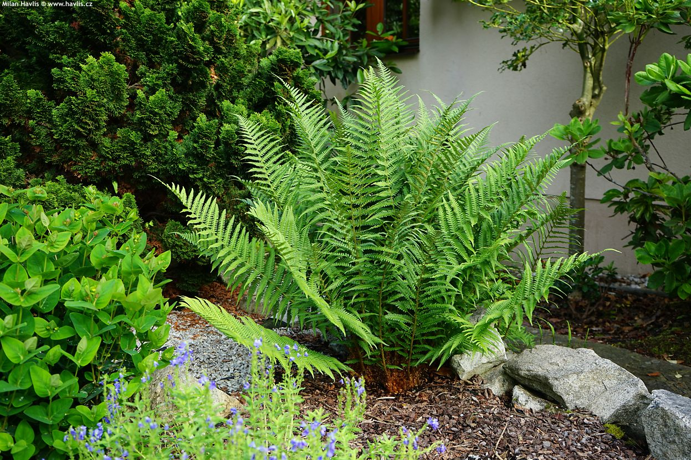

Kapradiny
V čem jsou speciální?
Kapradiny jsou zvláštní tím, že patří mezi nejstarší cévnaté rostliny na Zemi, jejich historie sahá až do prvohor. Nemají květy ani semena a rozmnožují se pomocí výtrusů, což je odlišuje od většiny dnešních rostlin. Mají listy zvané trofofyly, které jsou často složitě zpeřené a mohou se svinovat při rašení. Podzemní části kapradin, tzv. oddence, slouží k ukládání živin a vegetativnímu rozmnožování. Výtrusy se nacházejí na spodní straně listů ve skupinách zvaných sorusy. Po vyklíčení výtrusu vzniká malé pohlavní stádium zvané prokel, které je samostatnou rostlinou a umožňuje pohlavní rozmnožování. Kapradiny jsou také zajímavé svou schopností přežít ve stinných a vlhkých stanovištích, kde jiné rostliny často nevydrží.
Příklad kapradiny
kapraď samce
Kapraď samec (Dryopteris filix-mas) je běžná lesní kapradina rozšířená po celé Evropě, včetně České republiky. Dorůstá výšky asi 60 až 120 centimetrů. Má mohutné, jednoduše zpeřené listy vyrůstající z krátkého podzemního oddenku. Daří se jí ve vlhkých, stinných a humózních lesních půdách. Rozmnožuje se výtrusy, které se tvoří na spodní straně listů ve skupinách zvaných sorusy. Po vyklíčení výtrus vytváří malé pohlavní stádium zvané prokel, ze kterého vyrůstá nová rostlina. Kapraď samec byla dříve využívána v lidovém léčitelství, ale dnes se pro svou toxicitu již nepoužívá.
